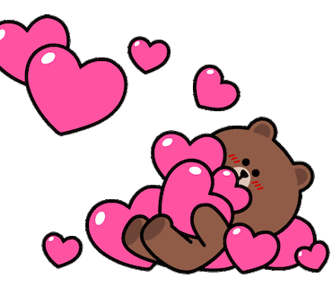
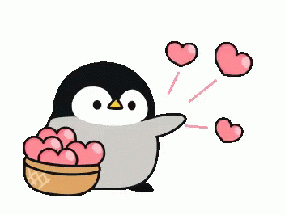

No sabes lo agradecido que estoy contigo mi amor por hacer de mis días los más felices de mi vida, y hacer de estos dos meses los más llenos de amor. Quiero que sepas que te quiero muchísimo, no hay las palabras exactas para poder demostrarte el gran amor que te tengo, pero sin dudas es puro y sincero. Este tiempo que ha pasado ha sido fantástico, maravilloso y hermoso, ya que he estado conviviendo con la mejor persona del mundo. Gracias por permitirme compartir contigo momentos increíbles, bonitos, maravillosos y únicos de los cuales siempre recordare y querré vivir más de esos momentos a tu lado. Gracias por cada momento que he pasado a tu lado, eres super especial para mí, espero que este tiempo a tu lado sea para siempre. Gracias por toda la felicidad que me has dado, por estar en las buenas y en las malas, yo me preguntaba si se puede querer y amar mucho a alguien tan especial en unos meses y… sí se puede y ahora hasta creo en el amor a primera vista, ya que ese día que saliste de tu salón me enamore perdidamente de ti. Me muestras cada día un poco más de tu vida y me permites compartir contigo la mía, eres la luz que me guía y me fortalece. Siempre recordare la primera vez que te vi, la primera vez que te hable en persona, o cuando te visite por primera vez, esos y muchos momentos son los que nunca podré olvidar ya que son los que marcaron algo tan especial en mi corazón, quiero estar contigo y crear muchísimos momentos más a tu lado. Cada instante junto a ti es maravilloso, no siento las horas cuando estoy contigo, cuando miro tus ojos descubro que el amor funciona, sólo espero que dure por muchísimo tiempo más.
Siempre estare agradecido de haber ido ese dia a tu edificio para asi poder conocerte cuando saliste de tu salon ya que asi conoci a una gran persona, que tan solo unos meses despues se convertiria en alguien tan importante y especial para mi, que es nada menos que el amor de mi vida, la persona que mas amo, la niña mas bonita e inteligente, la mejor esposa del mundo, eres eso y mucho mas mi amorcito. Gracias por llegar a mi vida para cuidar mi corazon y hacerte un lugar en el como alguien tan importante en el.
Gracias por hacerme tan feliz siempre y gracias por darme otra vez un si como respuesta y asi ser esposos por siempre 💖❣️